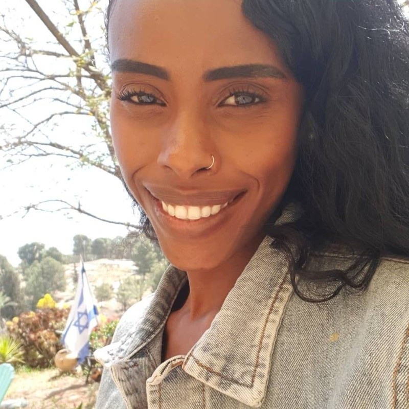

Final Project
Miriam Kisos
ID 305513632,
30 years old
I decided to take a FullStuck course because I love computers, creating things and being able to fix them.
The project was very challenging yet enjoyable.
While working I realized i have the aability and the patience to try my best in me to succeed

Mazal Mekonen
ID 302808639,
31 years old
living in Rehovot.
web development has always interested me
,with my decision to study web development I gained more knowledge
and professionalism, the project I was asked to do was very interesting And challenging.